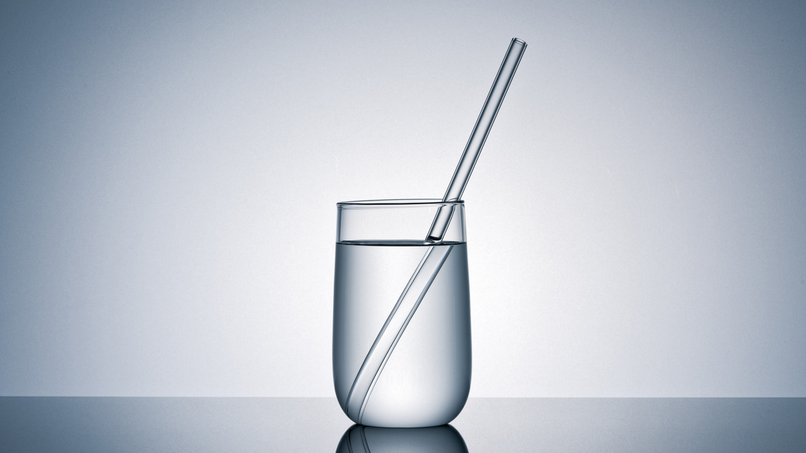

When light passes through the boundary between media, the phenomenon of “refraction” is observed. Investigate which factors affect the refraction of light in liquids. Compare the propagation of light in homogeneous and heterogeneous liquid media and explain the differences in the observed behavior of light.

When you observe a spoon placed in a glass of water, it often appears broken or disconnected at the surface. This striking visual phenomenon is caused by the refraction of light, which occurs when a light beam changes its speed and direction as it transitions from air into a liquid. Historically, this phenomenon was deeply studied by pioneering scientists such as Willebrord Snellius, René Descartes, Isaac Newton, and Christiaan Huygens. Thanks to their fundamental research, we are now able to explain many complex optical effects, decipher how the physical properties of liquids control light rays, and understand how light can even be forced to bend along a smooth curve.
To understand how this happens, we must first establish several core concepts. Light refraction, or refraction, is defined as the change in the propagation direction of a light ray when it passes through the interface between two media with different optical densities. Optical density is an inherent property of a medium that dictates the speed at which light travels through it; the higher the optical density, the slower the light moves. The exact measure of this slowing effect is called the refractive index (n), a value that represents how many times the speed of light in a vacuum is greater than its speed in that specific medium. Furthermore, we distinguish between a homogeneous medium, whose physical properties remain identical at all points, and an inhomogeneous (heterogeneous) medium, where the density and refractive index vary continuously or abruptly from one point to another.
The primary mechanism driving refraction is the change in the speed of light. This can be visualized by imagining a car driving at an angle from a smooth asphalt road (representing air) onto a patch of sand (representing water). The wheels that hit the sand first instantly slow down, while the wheels still on the asphalt continue at a high speed. This sudden difference in speed causes the car to swerve, changing its trajectory. Light behaves in exactly the same manner. Governed by Snell's Law, the incident ray, the refracted ray, and the perpendicular line drawn to the interface all lie within the same plane. When light enters a denser medium, the ray is bent closer to the perpendicular line. Consequently, the greater the difference between the speed of light in the two media, the more pronounced the refraction will be.
Several key factors influence how light refracts specifically within liquids. The first is the nature of the liquid, or its chemical composition. For instance, water and sunflower oil have different refractive indices due to their distinct molecular structures. The second factor is the concentration of dissolved substances. Dissolving sugar or salt in water increases its optical density, meaning that a higher concentration results in a stronger bending of light. Temperature also plays a significant role; heating a liquid causes it to expand, reducing its density and thus lowering its refractive index. Additionally, the wavelength of light (the color of the ray) affects refraction—an effect known as dispersion, where red light bends the least and violet light bends the most, forming the foundation of rainbows. Finally, the angle of incidence matters: the greater the angle at which light hits the interface, the more drastically its direction changes.
The behavior of light changes dramatically depending on whether it travels through a homogeneous or inhomogeneous environment. If we take pure, well-stirred water at a uniform temperature, we create a perfectly homogeneous medium. As light passes through the air-water interface, it refracts exactly once, and then travels in a strictly straight line throughout the liquid. No further distortions occur inside the water because the optical density is uniform everywhere, which is identical to how light moves through clear glass or a completely mixed solution.
On the other hand, if we pour water into an aquarium and carefully deposit a large amount of sugar at the bottom without stirring it, we create an inhomogeneous liquid. This establishes a concentration gradient: a very thick solution with a high refractive index forms at the bottom, while nearly pure water with a low refractive index remains at the top. A similar effect can be achieved through uneven heating. When light enters such an inhomogeneous environment, it no longer travels in a straight line. Instead, it continuously shifts from less dense layers to more dense layers, gradually curving along a smooth arc. This striking optical phenomenon is often referred to as a "ghost ray."
This phenomenon of continuous bending is not limited to liquids; it is also widely observed in nature within our atmosphere. Due to variations in air temperature at different altitudes, light refracts multiple times through air layers of different densities, giving rise to mirages in deserts and over scorching asphalt roads, causing people to see objects displaced from their actual positions.
Today, the study of light refraction is deeply integrated into modern technology and practical applications. It forms the operating principle behind essential optical devices, microscopes, telescopes, cameras, and specialized medical equipment. Furthermore, refraction plays a vital role in fiber-optic communications, which enables the high-speed transmission of internet data across vast global distances. Ultimately, whether light travels in a straight line through homogeneous media or curves through inhomogeneous environments, understanding refraction allows us to decipher natural optical illusions and power the technologies that shape our modern world.